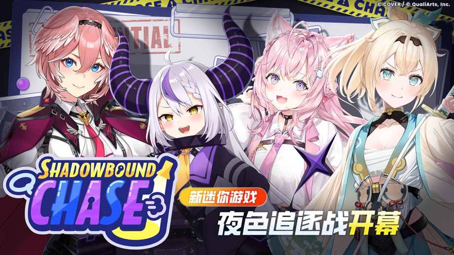

非常感谢您的支持。
我们是“hololive Dreams”运营团队。
2026-08-28 11:00:00我们进行了Ver.1.1.0版本更新。
全新迷你游戏“夜色追逐战”开幕！

全新迷你游戏“夜色追逐战”开幕！
在迷你游戏“夜色追逐战”中，玩家要分为逃跑的捣蛋组和抓人的巡逻小队进行对决。
详情请查看［公告］→［一览］→［全新迷你游戏“夜色追逐战”开幕！］。
其他更新内容
◆改善各种道具的获得量
根据各位玩家平时提供的意见与建议，我们重新调整了红色钻石及各种养成材料等道具的获得量。
- 2026-09-01 05:00:00起举办的任务通行证中，免费方案将新增最多1000个红色钻石。
- 为了让成员更容易获得养成材料，我们上调了可通过演出获得的养成材料奖励量。
-
- 增加课程Pt、Holo金币的获得量
- 增加各种碎晶的获得量（抽取概率）
- 大幅增加各种水晶的获得量（抽取概率）
- 在Holo贴纸兑换及特殊holo贴纸兑换中新增了演出能量。
- 已将特殊holo贴纸兑换中的Holo宝盒每月可兑换数量由5个调整为20个。
- 为了让电玩巨蛋城代币更容易获取，2026-08-29 12:00:00举办的活动起，已调整为可在活动兑换所获得电玩巨蛋城代币。
◆多人演出模式流程改良
-
今后，即便已经选好难度，也可以在设置页面取消了。
在限制时间内，且所有参加者选择难度并完成准备前，均可取消。 - MODE选择画面的“包含AUTO”及难度设置页面的“AUTO”设置，现在会沿用上次设置的内容。
◆自制谱面改良
- 您可以保存自作的自制谱面和心仪的他人自制谱面信息，并以图片形式分享了。
- 可以从自制谱面作者信息跳转到该作者制作的谱面一览了。
- 不再显示已屏蔽的玩家的自制谱面。
- 今后长按装饰音符工具，会开启调色板。
- 改良了警告、违规标志，并且更容易跳转到问题所在处。
- 现在可在设置缩略图前设置音符速度。
- 可以在封面图设置页面删除拍摄过的封面图了。
- 可以在试玩设置页面中更改演出选项了。
- 编辑器的界面宽度可以跟随屏幕尺寸动态调整了。
- 强化了不当谱面的检测手段。
- 制作自制谱面时，现在会显示音频频谱（仅限Steam版）。
◆其他更新内容
- 在自选扭蛋的“选择要pickup的成员吧”中，筛选及排序设置现在会按各扭蛋分别保存。
- 在Holowork中，工作结束时的通知现在不会在短时间内连续显示。
- 放宽了终极向前冲中第1名玩家抵达终点后至结束为止的限制时间。
-
可以在iOS设备上与GameCenter关联了。
自Ver1.1.0版本起，首次启动应用程序会显示登录页面。
◆故障修复
已修复以下异常。
- 在部分条件下，“共同演出”开始后，可能会暂时出现运行变慢的情况。
- 在部分条件下，“共同演出”的乐曲选择画面可能会在倒计时归零前无法进行操作。
- 在迷你游戏“终极向前冲”中进行特定操作时，可能会在非预期的时间点判定抵达终点。
- 在迷你游戏“终极向前冲”中，可能会爬到关卡中非预期的位置。
- 在迷你游戏“终极向前冲”中，掉落后可能会回到非预期的位置。
- 在自制谱面中，若公开乐曲时应用程序闪退，可能会导致乐曲无法公开。
- 部分玩家在演出或迷你游戏结束时，会显示“非法参数”。
- 在部分条件下，领取成就时会显示“非法参数”。
- 在部分条件下，重置Holo成员面板时会显示“非法参数”。
- 在部分条件下，Steam版标题画面的鼠标指针会消失，导致无法操作。
- 部分玩家开始游戏时，可能不会使用在游戏开头“选择你的第一位holo成员吧”中所选的holo成员。
- 在部分条件下，于任务通行证购买等级时，会显示高于实际消耗数量的数值。
- 在部分条件下，部分与乐曲解锁相关的成就，即使尚未达成条件，进度仍会增加。
- 在演出的游戏结果中，无论获得分数多少均可获得的“梦幻Exp”，也会重复显示为分数奖励的一部分。
- 歌曲“Kyun Kyun MIKO Kyun kyun♡”的“EXPERT”难度中，有一处音符的位置偏离了原本应配置的位置。
- 原本应在获得成员后才会解锁的对话语音，在获得成员前也能播放。
- 修复其他轻微异常。